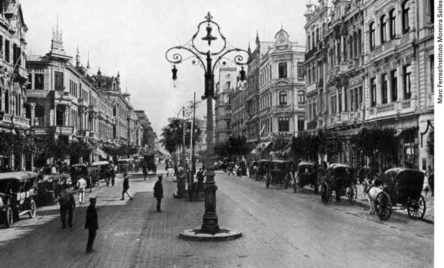
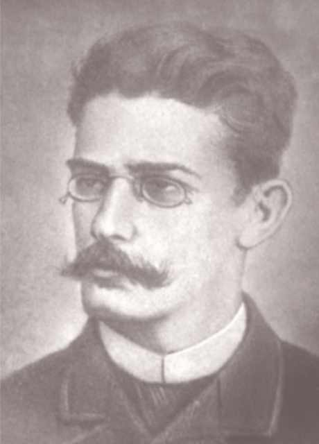
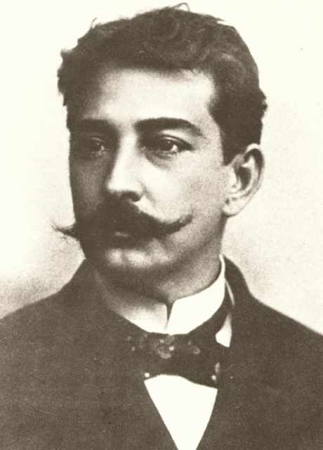
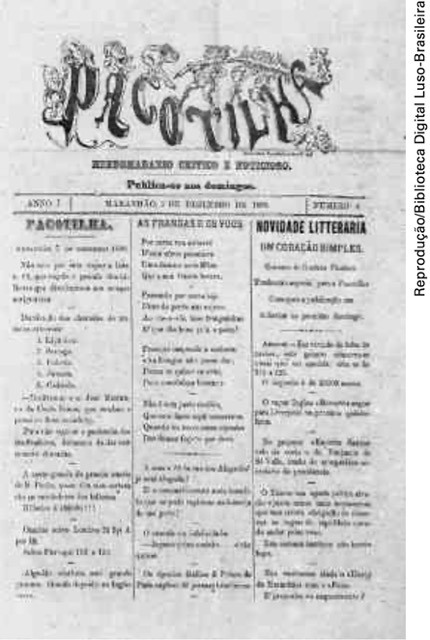

Naturalismo
Para começar
As fotografias abaixo retratam a cidade do Rio de Janeiro no final do século XIX e início do século XX. Observe-as atentamente.


Como exercício de leitura de imagens, tente:
Descrever brevemente os elementos que você observa nas imagens.
Dizer que aspectos revelam a modernização da então capital do país?
Aspectos das literaturas realista e naturalista no Brasil
As últimas décadas do século XIX foram bastante agitadas no Brasil. A abolição da escravatura em 1888, o fim da Monarquia e o início da República em 1889 são fatos indicativos das mudanças que ocorreram no país como consequência de uma crise social profunda que se arrastava desde os tempos coloniais e que alguns escritores românticos, como José de Alencar e Castro Alves, já haviam apontado. Essa crise, decorrente da nossa condição colonial, estava ligada ao atraso do país em relação aos países mais desenvolvidos e ao descompasso existente entre o modo de vida das elites nacionais e o modo de vida da maioria da população trabalhadora.
INTERDISCIPLINARIDADE com História (Monarquia e República do Brasil).
Desde pelo menos 1870, ano que marcou o fim da Guerra do Paraguai, o Brasil se inseria nas novas dinâmicas mundiais de aumento de fluxo comercial e de capitais. Exportava mais matérias-primas e produtos agrícolas para os países industrializados e, em contrapartida, recebia mais produtos e capitais para serem investidos, principalmente nas áreas de infraestrutura, como estradas de ferro, e de serviços, como casas financeiras. Mas, como se sabe, a modernização era para poucos. Em nosso país, a lógica do progresso sempre esteve mais ligada ao privilégio (de poucos) do que à cidadania (de todos).
O fim da escravidão e o aumento do trabalho livre levaram a um aumento considerável da imigração e fizeram com que as cidades crescessem de forma mais acelerada. A vida citadina se incrementava e seduzia as elites dos setores agrários, preocupadas em “adquirir cultura” e consolidar seu espaço na nova ordem política brasileira.
Também a imprensa do período foi marcada por grande movimento: nos jornais, ampliava-se o espaço para a discussão sobre a política e os rumos do país, e os folhetins e as crônicas produzidas por escritores brasileiros e estran- geiros eram cada vez mais publicados. De certo modo, a mentalidade brasileira começava a se modernizar.
Nesse cenário de consolidação republicana, Tobias Barreto, intelectual vin- culado à chamada “Escola do Recife”, foi um dos principais responsáveis pela divulgação das ideias que circulavam pela Europa. A filosofia positivista, por exemplo, foi importada da França e teve grande influência no país, como atesta o lema da bandeira nacional – “Ordem e progresso” –, que pressupõe a ordem como condição para o progresso.
No âmbito literário, os princípios realistas e naturalistas, assimilados por nossos escritores, abriram espaço para a produção de uma literatura de caráter analítico, voltada para a representação mais objetiva e crítica da nossa realidade social. Entre os escritores realistas brasileiros, destacam-se Machado de Assis e Raul Pompeia, autor de um romance intitulado O Ateneu. Na vertente naturalista, o escritor Aluísio Azevedo é o principal escritor do período.
Também merece relevo uma produção ficcional de caráter regionalista. Mais objetiva e crítica do que a prosa regionalista produzida no momento anterior, a prosa mais significativa do regionalismo naturalista compreende romances de três escritores cearenses: Luzia-Homem (1903), de Domingos Olímpio; A normalista (1893) e O Bom-Crioulo (1895), de Adolfo Caminha; Dona Guidinha do Poço (escrito por volta de 1891 e publicado apenas em 1952), de Manuel de Oliveira Paiva.
A originalidade das obras de Raul Pompeia e Aluísio Azevedo

O carioca Raul Pompeia (1863-1895) publicou artigos de crítica literária, contos, crônicas e folhetins. Ilustrou diversos livros seus e de outros autores e também fez caricaturas de personalidades da época. Em 1880, publicou o ensaio literário Uma tragédia no Amazonas e, em 1881, publicou o livro de poemas Canções sem metro. Escreveu também o romance Alma morta, mas foi com O Ateneu (1888) que se tornou conhecido.

Aluísio Tancredo Gonçalves Azevedo (1857-1913) nasceu no Maranhão e morreu em Buenos Aires. Escreveu romances de cunho romântico e naturalista e diversos contos e peças de teatro, algumas em parceria com o irmão Artur de Azevedo. Durante muito tempo viveu da renda de seus escritos e, posteriormente, dedicou-se à carreira diplomática.
A principal obra de Raul Pompeia é o romance O Ateneu, publicado em 1888 e considerado por muitos críticos como uma obra-prima da literatura oitocentista brasileira. O romance, de caráter autobiográfico e memorialista, é narrado pelo personagem Sérgio. Já adulto, ele rememora suas experiências no internato Ateneu onde, aos 11 anos, foi matriculado por sua família para completar os estudos.
A frase que abre o romance, proferida pelo pai de Sérgio – “‘Vais encontrar o mundo, disse-me meu pai, à porta do Ateneu. Coragem para a luta.’” – reflete bem as dificuldades que o adolescente iria enfrentar. No rigoroso colégio, sua formação intelectual, emocional e sexual se dá de maneira dramática, entre a hostilidade dos colegas e as atitudes corruptas do ganancioso diretor Aristarco Argolo de Ramos.
A originalidade do romance reside no fato de ele apresentar uma perspectiva reflexiva e uma dicção bastante própria, distanciada da objetividade narrativa que era corrente no período em que foi escrito. A descrição expressionista é uma das principais técnicas usadas para caracterizar os espaços e as pessoas, cujos traços muitas vezes são representados de maneira exagerada, caricatural.
A obra manifesta, assim, um ponto de vista subjetivo sobre a realidade, filtrado pelo olhar do narrador-personagem, mas não deixa de trazer também uma crítica contundente ao funcionamento da sociedade, estabelecendo um retrato da decadência dos valores durante o Segundo Reinado.
Nesse sentido, o imponente colégio Ateneu, dirigido por um empresário disfarçado de educador, pode ser visto como um microcosmo da sociedade brasileira, e os filhos das elites que ali se formavam podem ser tomados como vítimas de um contexto violento e interesseiro. Essa é a face determinista do romance de Raul Pompeia, que reforça a tese de que o meio influencia o comportamento dos indivíduos.
A produção ficcional do maranhense Aluísio Azevedo é bastante desigual: oscila entre o Romantismo folhetinesco, repleto de aventuras improváveis e voltado para um público menos exigente, e o Naturalismo, baseado no enfoque dos dramas coletivos e no determinismo cientificista.
Entre os romances do primeiro tipo, Aluísio Azevedo escreveu Uma lágrima de mulher (1879), Mistério da Tijuca (1882) e A mortalha de Alzira (1894). Já seus romances naturalistas mais importantes são O mulato (1881), Casa de pensão (1884) e O cortiço (1890). A escritura alternada de romances românticos e naturalistas parece ter sido parte do projeto literário do escritor, que pretendia “acostumar” os leitores com a nova literatura naturalista. Sobre sua intenção, ele mesmo escreveu:
É preciso ir dando a coisa em pequenas doses, paulatinamente: um pouco de enredo de vez em quando; uma ou outra situação dramática de espaço a espaço, para engordar, mas sem nunca esquecer o verdadeiro ponto de partida – a observação e o respeito à verdade. Depois as doses de Romantismo irão diminuindo gradativamente, enquanto que as de Naturalismo se irão desenvolvendo; até que um belo dia, sem que o leitor o sinta, esteja completamente habituado ao romance de pura observação e estudo de caracteres.
ABDALA JÚNIOR, Benjamin; CAMPEDELLI, Samira Youssef. Tempos da literatura brasileira. São Paulo: Ática, 1985. p. 146.
Se os romances românticos do autor possuem um padrão artístico discutível, os romances naturalistas destacam-se por tematizar as dificuldades das classes sociais mais pobres, apresentando uma análise crítica da sociedade brasileira. Assim, o romance O mulato, considerado o primeiro romance naturalista da literatura brasileira, aborda a questão do preconceito racial, ao narrar a impossibilidade de relacionamento amoroso entre um jovem mulato e uma moça branca. A história gerou escândalo na conservadora sociedade maranhense da época, desagradando principalmente algumas figuras do clero, que se viram representadas no personagem Diogo, um padre hipócrita e racista.
Já o romance O cortiço, obra-prima do escritor, apresenta um dinâmico painel social, centrado no proletariado urbano em formação, que luta para sobreviver com pouquíssimos recursos. Dessa condição resulta a necessidade de se morar num cortiço, moradia coletiva de caráter precário, com poucas condições de higiene e nenhum conforto.
No romance, o cortiço, habitado por pessoas de diferentes origens e características – imigrantes portugueses e italianos, mulatos capoeiristas, policiais de baixa patente, mascates e lavadeiras –, é administrado de perto por seu proprietário, o português João Romão, que possui um claro projeto de enriquecimento.
A obra, que tem como epígrafe “A verdade, somente a verdade, nada mais que a verdade”, está ancorada na observação rigorosa do mundo físico e na teoria determinista. Entretanto, ultrapassa o simples determinismo ao apresentar também outra perspectiva sobre a condição humana: no romance, a exploração física e econômica das pessoas é compreendida como consequência do modelo capitalista, cujo representante maior é o inescrupuloso João Romão, capaz de manipular tudo e a todos para ascender socialmente. Esta é uma visão pessimista do funcionamento da sociedade brasileira, calcado na exploração de muitos para o sustento do privilégio de poucos.
A linguagem de O cortiço é ágil e bem construída. Os dados da realidade concreta são captados por diferentes canais sensoriais, e os gostos, as cores e os cheiros ganham destaque na caracterização minuciosa do ambiente, das pessoas e de seu modo de vida. A personificação do espaço coletivo e a zoomorfização dos personagens, que frequentemente são rebaixados à condição animal, são estratégias usadas pelo autor para enfatizar a degradação do cortiço e das relações sociais ali constituídas.
Literatura e publicidade
Hoje, é comum que livros sejam lançados por meio de campanhas publicitárias, que anunciam as obras e, algumas vezes, valem-se até do suspense, divulgando, por exemplo, que determinado autor “em breve” publicará um novo título de impacto.
Entretanto, essas estratégias, no século XIX, eram uma grande novidade e Aluísio Azevedo foi um dos pioneiros a unir literatura e publicidade no Brasil, consagrando-se como “o primeiro romancista de massas”. Sobre a ousadia do escritor, leia o que escreveu Carlos Faraco:
O lançamento de O mulato foi sustentado por uma campanha que incluía cartazes de rua e anúncios no jornal Pacotilha – também fundado por Aluísio e amigos. E mais: pouco antes de o livro vir a público, o jornal O Pensador publicou uma “notícia” anunciando a chegada a São Luís do Dr. Raimundo José da Silva, distinto advogado que partilha de nossas ideias e propõe-se a bater os abusos da Igreja. Consta-nos que há certo mistério na vida deste cavalheiro.
Aquilo que parecia ser uma notícia confundia, de propósito, um personagem de ficção com uma pessoa de carne e osso. Em curto prazo, venderam-se os dois mil exemplares da primeira edição de O mulato, o que atesta o sucesso da campanha e do romance.
FARACO, Carlos. Aluísio Azevedo: o povo como personagem. In: AZEVEDO, Aluísio. O cortiço. São Paulo: Ática, 1994. p. 110.
